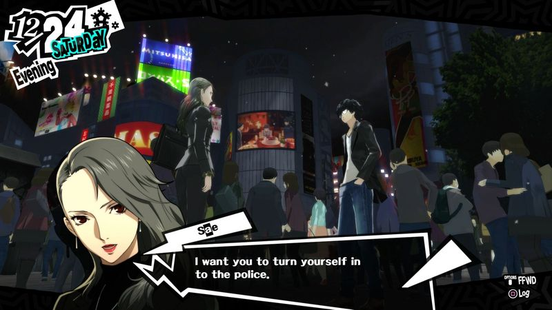

以诺斯替主义和荣格心理学的视角解读《Persona 5》世界观与剧情
“其实构思剧情，我们不想让玩家觉得通关才是乐趣所在。重要的应该是获得某种启迪，某种能用于未来生活的智慧。如果能有那种收获，我相信自然会有很棒的娱乐价值” ——桥野桂
写在前面
虽然选题野心勃勃，但本文相比严谨的论文，更偏向视频笔记与杂谈。我会大量搬用参考视频的内容，并结合自己的理解，深入解读P5的世界观与剧情，尝试解释是什么让这套天马行空的设计如此自洽且足够吸引我们。（本文源自笔者于游戏策划训练营的作业）
序
诺斯替主义（英语：Gnosticism，或称灵知派和灵智派）的“诺斯替”一词在希腊语中意为“知识”，诺斯替是指在不同宗教运动及团体中的同一信念，这信念可能源自于史前时代，但却于公元的首数个世纪活跃于地中海周围与伸延至中亚地区。这信念的主旨就是透过“灵知”（Gnosis，或译“真知”）来获得知识。“灵知”在希腊语原文，是指透过个人经验所获得的一种知识或意识。诺斯替主义者相信透过这种超凡的经验，可使他们脱离无知及现世。诺斯替主义可分为受祆教影响而倾向善恶二元神论的波斯学派、以及受柏拉图主义影响而倾向一元神论的叙利亚／埃及学派。——维基百科
简而言之，主流的诺斯替主义认为，世界是二元论的，即物质世界是肮脏的，邪恶的，而精神世界是神圣的，光明的。他们认为，人本是神，人内心深处的灵便可印证这一点。所以说人流落到凡间，最终也应回归到神界。可是在凡间中，有那么一个伪神自称自己是唯一神，祂既不全能，也非全知，更非全善。伪神将本属神的人用自己打造的物质世界囚禁起来，并且在人的肉体与灵之间创造了魂，使人与灵无法直接连接，使人受困于魂，在物质世界里面堕落，迷失与沉沦。
诺斯替主义并不信仰世上存在那么一个全知全能的唯一神，他会如此质问：假如世上真的有这么一个神，那他为何要把我们丢进一个动荡混乱，充满苦难的世界？所以他们认为，人便是神，但是只有“知识”“真理”才能将人从物质世界里解放出来，以展现其神的特质。
关于荣格心理学，其范围十分之广，这里主要引用荣格关于人格面具和阴影的描述，毕竟这两者是贯穿整个游戏的核心概念。
人格面具（英语：persona）是瑞士心理学家卡尔·荣格提出的概念，荣格将一个人的人格比喻为面具，在不同的社交场合人们会表现出不同的形象，也就是戴上不同的面具，因此面具并不只有一个，而人格就是所有面具的总和。——维基百科
阴影是人无意识或梦中同性但性格与自我（ego）相反的人物，也是荣格四大原型之一。荣格认为人性是矛盾的，如果表现于外的意识中的性格是东，在无意识中补偿性的性格往往是西。阴影也有正负之分。正面的自我的阴影是负面的。负面的自我的阴影是正面的。——维基百科
所以女神异闻录5大抵是这样的一个故事：东京是繁华的国际大都市，是时尚的天地，是满足物欲的乐园，可正是这样的东京，宛如同一个巨大的囚笼，监禁着无数西装革履，半驼着背，面无表情，生活于此的人们。人们受着伪神的支配，变得麻木不仁，愚昧无知。而怪盗团便是掌握着“真理”的人，在接纳自己的阴影，整合原型并创造出一个强大的人格面具后为自己所用，拥有着自由意志的他们拒斥着伪神的统治，并公然反抗。
故事就此拉开序幕。

囚笼中的异乡人
我知道这世界我无处容身，只是，你凭什么审判我的灵魂？——《异乡人》阿尔贝·加缪
他亲眼目睹一位中年男性企图在酒后对一名女士实施猥亵，他握紧了拳头，大胆上前制止。但正义的他却遭到男人的诬告，加害者权势滔天，受害者怯于作证，警察则成为了帮凶。他遭到逮捕，被迫转学，来到一个自己完全陌生的城市——东京。

在经受不公的审判之后，这位高中生眼中的世界早已失去了公平与正义，在秩序之下运转的，是一个可怖的巨大囚笼。这就像是诺斯替语境下的，伪神创造了肮脏，邪恶的物质世界，它充满着谎言与闭塞，使人一步步堕入愚昧无知。
“别以为你是自由之身。”佐仓如此说道。
“这个房间的样貌便是你内心的样貌，没想到居然是监狱。”伊戈尔一语道破。
东京是囚笼，异乡人便是雨宫。
“我们学校为什么要接受这样的学生。”
“我还希望他不要转来我们班呢。”
“听说那个人会随身带着小刀……”
我并非心甘情愿来到这里，这里没有我的容身之处，我相信这就是雨宫的内心写照。这位高中生与整个世界显得是那么的格格不入，但正是这样的契机，他偶然获得了一股足以改变世界的力量。
神圣的火花
觉醒的人只有一项义务，找到自我，固守自我。沿着自己的路向前走，不管它通向哪里。——《德米安》赫尔曼·黑塞
神圣的火花是展开诺斯替式叙事的前提，它是人类深处亟待被唤醒的灵。可以说，不管是雨宫莲，还是坂本龙司，高卷杏，以及之后的伙伴，当他们接受了自己的阴影并觉醒了强大的人格面具之后，就逾越了肉体与灵之间的隔阂，让他们有能力去挑战伪神。就是说：一旦我接受了自己的软弱，我便是无敌的！ (ﾟ∀ﾟ)
换言之，就是他们在受到欺压，侮辱或霸凌之后，彻底认清世界的虚伪与不公之时，仍有勇气去面对与纠正这个世界，他们便获得了“诺斯替”的力量。这股力量来源于崭新的人格面具，高卷杏丢掉了顺从鸭志田变态的要求的人格面具，试图将这个变态的所作所为公之于众。喜多川祐介丢掉服从斑目进行无休止的创作的人格面具，试图揭发他利用并压榨学生的事实。奥村春丢掉了支持父亲政商联姻的想法的人格面具，并希望父亲能够改邪归正等等。
他们不满于现状，不服从于现有的秩序，自然而然地会创造出一套自己的行为准则。 正如Mona所说，“西边有人遇难便出手相助，东边有人做恶便予以制裁，南边有人边走边吸烟就提出警告，北边有猫被虐就绝不会视而不见。”怪盗团不接受现有的任何既定的道德判断作为前提条件，只笃信自己的正义，通过特殊的途径去纠正这个世界。神圣的火花已然觉醒，但身为怪盗的他们到底是义警，还是罪犯呢？
欲望的殿堂
你们知道吗，我有一个美丽的愿望，我期待着一场伟大的背包革命的诞生。——《达摩流浪者》杰克·凯鲁亚克
欲望分为很多种，饿了就吃，困了就睡这种是人类生理上最基本的欲望，是一种动物为了生存下去的本能。这与现代性的欲望大相径庭。现代性的欲望是被整个社会系统生产出来的，其引入了一个重要的因素，即个体在系统里面的位置以及个体之间的权力与利益关系决定着他所拥有的现代性欲望。在游戏中，鸭志田的欲望是欺压学生，以获得唯我独尊的优越感，或是猥亵学生，以满足自己无耻的性欲。如果他不是一位获得了奥运奖牌的明星体育老师，大抵也不会存在这种欲望。而斑目的欲望是不断压榨自己的徒弟，为自己产出画作，收获名声，赚取利益。而如果他不是一个卷入政商勾结的画家，代表着日本美术界的门面，大抵也没有这种欲望。这不像他们的私欲，而像是系统需要这样的人来维持整个结构的稳定。
所以当怪盗团不断去让这些大人物悔改的时候，“支持率”貌似是上涨了，但是这些坏人似乎永远无法根除。就像没有了鸭志田，在世界的哪个角落依旧会存在一个鸡志田，鹅志田。即便是击败了即将上任的总理狮童正义，世界也没有变得如怪盗团所希望的那般美好，因为他们面对的永远不是那一个个具体的坏人，而是整个腐朽的系统，诺斯替主义之下的伪神。 这些“大人物”拥有着自己的殿堂，而不是与普通人一般待在印象空间。可以说他们是“天选之人”，他们在系统中突出的位置便决定了他们如此扭曲且强烈的欲望，这种欲望以一种实体化的方式呈现，它可以是富丽堂皇的城堡，可以是金碧辉煌的美术馆，也可以是高高在上的银行等等。
这些殿堂虽然疯狂，却十分合理。怪盗团想要找到鸭志田的秘宝，就要在学校里发预告信，好让他打开城堡的大门。想要找到斑目的秘宝，也要在现实里打开他藏着小百合的那扇房门。而殿堂主悔改之后，殿堂也会随之崩溃。
所以说殿堂的世界永远是跟现实紧密相连的，而一旦偷走了他们的秘宝，也就让他们在象征层面里意识到自己失去了得以施展自己扭曲欲望的重要之物，负面的阴影便会消解，只留下正面的阴影并进行原型整合，那殿堂主便会改邪归正了。他们就会意识到自己在系统里的位置已然和最普通人一样，虽然现实中尚未发生任何改变。但他们由于改邪归正会主动放弃这个位置，而系统也会自然而然地放弃这个个体了。
造梦的德谬哥
我吃了药，把疼痛给蒙骗了，我很高兴——《荒原狼》赫尔曼·黑塞
涩谷，拥有着世界上最繁忙的十字路口。而涩谷站，作为日本的交通枢纽，无数的铁路干道汇聚于此。从这点来看，印象空间的入口便是涩谷站似乎就很合理了：它从此分发出去，触及到世界的每一个角落，无数的欲望凝结于此，构成了容纳集体无意识的空间。

伴随着狮童正义的悔改，社会并未像怪盗团所期望的那样发生转变，而是向着更深的深渊滑落下去。曾经受人们万般仰慕的总理实际上是一位贪图享乐，虚荣奸诈的暴君，政府的威信荡然无存，人们该去相信什么，又能去相信什么？在这种信任崩塌的时刻，民众变得迷茫不安，内心仿佛在呼唤着能够带来幸福与永逸的统治者，或者说想要抓住点什么，等待着一切重回正轨。伪神的力量便得到了前所未有的膨胀，它企图控制集体无意识，它向众人宣示着一个完美的世界，一个没有阶级分化，没有社会不公，没有悲痛苦难的美丽的新世界，只要人们放弃思考，自愿走进牢笼，然后等待伪神生产出欲望，再将其实现与消费，如此往复，这样人们便会变得麻木愚昧，不，就会变得幸福快乐了。这里所说的伪神生产出的欲望，便是一种现代性欲望。你可以把它理解为消费主义，娱乐主义，等等等等。它旨在通过一种“转移矛盾”的手段，让民众沉沦于现代性欲望之中，一蹶不振。
所以，此时由集体无意识所孕育出来的圣杯是令人绝望的。它无法被战胜，因为它是民众赖以生存的现代性欲望的凝聚体，是在个体完全遁入绝望与虚无主义前的最后一根救命稻草。怪盗团企图去摧毁它，也只会遭受其更猛烈的反击。
想象世界与现实世界开始融合，印象空间的触须终究突破了大地，狰狞的地下世界如约降临。但人们看不到血雨，看不到伪神，察觉不到怪盗团。只有怪盗团一直在孤军奋战。 那怎样才能击败伪神呢？当最后一股反抗伪神的力量倒下，所有人都面临着消失与毁灭的命运。但或许我们忘了一个重要的指标——支持率。它就像是代表着民众“对于希望的欲望”，相信世界并非无可救药，相信勇敢的抗争并非无济于事，相信人类是有着改变世界的力量的，只是他们不小心忘了而已。当怪盗团惩恶扬善时，支持率在一点点上涨。当怪盗团受到污蔑时，支持率骤然直下。此刻几乎为零的支持率，正是象征着人们早已放弃“希望”。
不过，此刻站在人群之中三岛发出了最痛彻心扉的呐喊
“你们以为它们究竟是为了谁，才挺身而出的！？”
“你们也差不多该清醒了吧！”
“你们准备逃避到什么时候？”
……
“既然到了这个地步，就不允许失败了，坚持到最后吧！”
“我其实还是很期待的，一定要赢啊！”
“只要加油鼓励就能获胜吗？那么不管多少次我都会为你们加油的！”
“你们已经抓住了这么多人的心，要是输了可饶不了你们！”
“我是知道的，如果是你们，无论怎样的命运都能反抗！”
……
人们再次意识到，不论世人赞扬或质疑，怪盗团始终笃信着心中的正义，对抗着这个虚无的世界，希望能给人类带来“希望”。应援声此起彼伏，当人类的“欲望”不再寄托于伪神，而是寄托在能给它们带来希望的怪盗团，攻守之势自然异也。
归乡的愚者
我们还有很长的路要走。不过没关系，道路就是生活。——《在路上》杰克·凯鲁亚克
与神称义的故事无疑是浪漫的，是否公正，是否合适，人自有判断，神无需妄言。当人们自愿走出囚笼，伪神也即失去了力量。愚者以恶魔之姿将其击溃，令它化作虚无，一场穿梭于两个世界的冒险告一段落。
飘雪的圣诞前夜，琐事如织，行人如常，一切重回正轨。
“情绪高昂的革命过后，随之而来的是因袭成规的日常琐务。从事圣战的领袖，甚至信仰本身，都会渐渐销声匿迹。”
诺斯替主义者本就是一群反抗与不羁的人，而当他们成为了先知，引领着整个系统重构之时，他们又如何自处？
他们唯一能做的，只有消灭自己，将引导世界更生的任务交还给“大人们”，相信人类是有着改变世界的力量的。
所以在12月25日，雨宫莲选择了自首。

最初的案件也是最终的案件，偷心无法改变的结局，却能靠众人的力量将其逆转。诺斯替主义者的来时路是孤独的，不过离开的时候他并非孑然一身，他们收获了人与人之间宝贵的财富——羁绊。
最终雨宫莲得以保释，准备归乡，泯然众人。平淡的结局里，留下的是对未来的无限希望。诺斯替主义所提出的疑问，我们每个人都会遇到。但当我们对身边的世界产生怀疑甚至与其渐行渐远之时，请不要忘记Mona所说的话： “世上并不存在真实的世界，世界是由每个人的感受形成的，这便是世界的真相。所以世界是无限的，就算你的眼前一片漆黑，但是只要握住某人的手，用羁绊连接在一起，世界就不会终结。”
最后的话
最后，我就从策划的角度谈谈游戏设计吧。
我想为游戏赋予“流浪汉小说”的感觉，所以我需要一个地方，表现主角无处可去的境遇。
开发《女神异闻录5》时，公司正面临一段困难时期。
我们唯一能做的就是发布一款好游戏。
开发女神异闻录5时，制作团队正处于一种“孤注一掷”的处境。我觉得这种受命于天，义无反顾的创作背景赋予了这款作品尖锐的现实性。它直指社会现实，取景来源于现实世界，映射的是现实的权力结构，利益关系等等，表达的是对时代的隐忧与深刻反思。
诺斯替主义当然不是解读这款作品的唯一途径，我对其的了解也仅仅是一些零散的表层的词句，不过其确实具有一定的解读合理性，连我一个外行人也能洞察到一些惊人的联系。不管是它设想了有那么一个“伪神”统治着人类世界，将人类的愚昧无知，麻木冷漠归因于伪神所创造的处于一个腐朽系统之下运行的物质世界，还是说设想那些掌握着真理的“神圣的火花”有着足够的能力与激情去改变这个世界等等，都能在这部作品里面自圆其说。我认为创作者是有这方面的知识的，创作过程中必然也做了些许考量。
而关于荣格心理学，或者说得更宽泛一些，精神分析或心理动力学，也是Persona系列的常客了，其提出的“人格面具”和“阴影”贯穿着整个系列。我记得p4对阴影的描绘更加真实可感，就像是阳介的阴影毫无保留地揭穿阳介“渴望得到可爱美丽女性的关注”的想法，或者是雪子“渴望一位白马王子将自己于既定的命运之中解救出来”，或是完二的“同性恋情结”等等，这些都是平日里被他们所压抑的事物，内心深处的事物。这些阴影足够可怕，个体愈是想压抑它们，它们愈是有吞噬个体的倾向。p4里的阴影精确命中了“如果表现于外的意识中的性格是东，在无意识中补偿性的性格往往是西。”。

而在p5中，制作者并没有对怪盗团克服自身阴影的过程予以浓墨重彩的刻画，反而是将重点放在了那些坏人之上。我相信他们在现实中完全能认知到自己作恶的习性，但是为什么他们的阴影依旧是一种癫狂恶毒的形象？这貌似跟心理学上的阴影定义存在出入。我的解释是，他们在意识层面确实知道自己是被世俗定义的恶棍，但也只是由世俗定义的恶棍罢了。扭曲的现代性欲望让他们能够找到一个将自己所作所为合理化正义化的借口，他们在表意识里面甚至会觉得自己的所作所为本质上没有任何问题，女学生们为了巴结鸭志田，可以出卖自己的身体，但她们确实得到了晋升的机会，那鸭志田的性骚扰是不是就显得合理且双赢了呢？正是这种想法欺骗了“坏人们”，而他们也乐意被欺骗下去。所以他们的潜意识是可怖的怪物一点也没问题了。
在游戏设计里引入这些专业性的概念十分前卫，Persona系列处理得很好，不会给玩家一种晦涩难懂的感觉。因为它足够“接地气”，他不是什么剑与魔法的架空世界，也不是什么科幻迷离的赛博世界，它就是以最日常的生活为底片，放眼于人的所思所想，人与人之间复杂千秋的关系，还有人们生活于此的社会罢了。而且它也足够具体：阴影以一种面目狰狞的实体出现在玩家面前，就是告诉玩家“它真的很恐怖”，人格面具以一种可见的神话人物或妖魔鬼怪呈现，它们有着华丽的魔法，炫酷的特效，充满压迫感的演出，就是告诉玩家“它真的很强大”。也就是说，这套设定足够天马行空，但他的落脚点都是再真实不过的事物罢了。 游戏中的明线是怪盗团的崛起，活跃，挫败与救世，而我觉得暗线是：
“在陌生且失序的世界里，如何才能重塑希望。”
这个问题，是一段深刻在人类历史中的记忆。我想不管是改朝换代，政权更迭，社会转型，个人成长等等，都会涉及到此。它跟每个人都紧密相关，特别是那些站在十字路口感到迷茫不安的人，那些心系国家社会发展的人。那么这个故事自然而然能引起人们深深的共鸣，我觉得它更能引起日本青年的沉思吧：在经历了失去的30年，又怎样才能重塑希望呢？
就好像，当怪盗团站在城市之巅，什么样的感情会油然而生呢？
参考素材
除了天下第一，还藏着什么？《女神异闻录5》中的灵知主义人义的激情与世界的寂静结伴而行（https://www.bilibili.com/video/BV1NT41127nK?t=1.0）